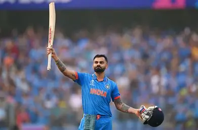

Cricket: A Complete Overview Cricket is a globally celebrated bat-and-ball sport, especially popular in Commonwealth nations like India, Australia, England, and South Africa. Here's a structured breakdown of its key aspects: Cricket: A Complete Overview.Cricket is a globally celebrated bat-and-ball sport, especially popular in Commonwealth nations like India, Australia, England, and South Africa. Here's a structured breakdown of its key aspects:
🏏 Virat Kohli: The Modern Cricket Icon Virat Kohli is one of the most celebrated cricketers of the modern era, known for his aggressive batting style, unmatched consistency, and passionate leadership. Here's a comprehensive snapshot of his journey: 🏏 Virat Kohli: The Modern Cricket Icon Virat Kohli is one of the most celebrated cricketers of the modern era, known for his aggressive batting style, unmatched consistency, and passionate leadership. Here's a comprehensive snapshot of his journey:
